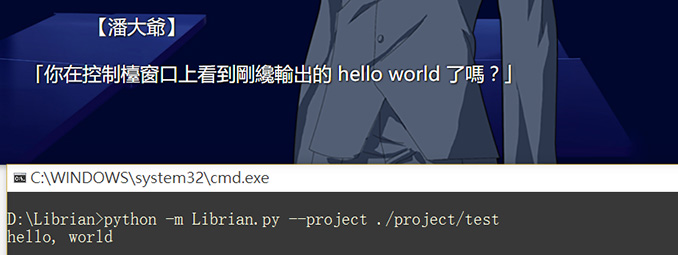

嵌入python
這一節可能需要用到python。
Librian的嵌入python可以用於實現劇本的邏輯，也可以成爲獨立的擴展功能。
如果你想要完成一個完整的galgame的話，嵌入python應該是必須用到的功能吧。
不過這並不意味着你必須去學習這門編程語言——如果只是簡單的功能的話，看樣例就足夠了。
從簡單的例子開始
hello world:
潘大爺 「準備好了嗎？」
>py
print('hello, world')
>endpy
潘大爺 「你在控制檯窗口上看到剛纔輸出的 hello world 了嗎？」
如果你看到了hello world說明你已經成爲了python大師(笑)，馬上就可以從這裏畢業了。

定義變量:
潘大爺 「試着定義一些變量。」
>py
hp=150
hp-=50
print(f'潘大爺還有{hp}點生命值！')
>endpy
潘大爺 「看來我的生命值已經如同風中殘燭了。」
運行結果: 潘大爺還有100點生命值！
print 只會輸出在控制檯上，最終發佈的遊戲並沒有控制檯，所以這個消息是給開發人員看的。
如果你把 print 換成 fusion 的話，「潘大爺還有100點生命值」除了會顯示在控制檯上以外，也會顯示在adv畫面中。這種方式顯示的文字和劇本一樣經過編譯——也就是說在前面寫上人名的話就會變成對話。
輸出到adv界面:
潘大爺 「我試試這樣說話……」
>py
hp=150
hp-=50
fusion(f'潘大爺 「我還有{hp}點生命值！」')
>endpy
潘大爺 「感覺不錯。」

對了，每一次執行是互相關聯的，因此你可以使用上次的代碼塊留下的變量進行判斷。
稍微提升
接下來就是分支跳轉了，之前說了劇本函數 WARP ，接下來介紹通用的 if :
潘大爺 「if真是太棒了。」
>py
hp=5
hp=-10
if hp<0:
print('大爺死了。')
goto('gameover.play')
>endpy
潘大爺 「看來我還活着。」
# 這是劇本gameover.play中的內容
潘大爺 「騙人的吧？」
>py
adv_end()
>endpy
在潘大爺的生命小於0的時候，跳轉到劇本「gameover.play」。
在「gameover.play」，潘大爺說出「騙人的吧？」之後，調用 adv_end 結束遊戲。
難題
提供選擇肢的 choice 函數並不是很好理解。
choice 在adv演出中提供幾個選項，每一個選項都是一個組，包括一個選項名和一個回調函數。
下面是樣例。
def f():
好感度+=1 #英文真難！
choice(
('跳到一章',lambda: goto('一章.play')),
('跳到二章',lambda: goto('二章.play')),
('刷好感度', f )
)
爲什麼分了三行…… lambda 是什麼玩意……爲什麼單獨定義了函數 f ……
好像對於沒python的小夥伴來說太難了點，要解釋的話甚至還設計到了語句和表達式的關係……
只是依葫蘆畫瓢的話會比較好嗎，不過搞不清楚什麼時候填 lambda 的話就連依葫蘆畫瓢都做不到了……都是不學習的錯(傲嬌臉)！
如果你覺得這個函數有更簡單的設計方法的話，歡迎在 缺少的功能/一些遺憾 提出寶貴意見。
在 劇本功能 中說過的 WARP，實際上是 choice 和 push 的語法糖。
WARP [接受治療,壞結局.play] [放棄治療,好結局.play] [蘿莉治療,一章.play,原點]
相當於
choice(
('接受治療',lambda: call('壞結局.play')),
('放棄治療',lambda: call('好結局.play')),
('蘿莉治療',lambda: call('一章.play','原點'))
)
究極
試着嵌入一個「在副線程進行一段時間的操作並在完成時給出反饋」的劇本。
潘大爺 「点一下来开始大约持续5秒的自動更新！」
>py
import threading
def 更新():
time.sleep(5) # 连接到你自己的发布地址
goto(lable='更新完了')
import 窗口,劇本
劇本.讀者.步進()
窗口.更新()
t = threading.Thread(target=更新)
t.setDaemon(True)
t.start()
>endpy
*back
潘大爺 「更新还没有结束，更新完了时无需点击会自动进入下一句。」
>py
goto(lable='back')
>endpy
*更新完了
潘大爺 「更新完了。」
這個我怎麼解釋……
(話說下次提供一個副線程支持吧)
試試RPG打架。
> py
from random import randint
def 攻擊(a,b):
傷害=int(randint(8,12)/10*a['攻擊力'])
b['當前生命']-=傷害
fusion(f"{a['名']}攻擊{b['名']}！造成{傷害}點傷害！{b['名']}的生命值{b['當前生命']}/{b['總生命']}。")
def 死亡一指(a,b):
b['當前生命']=0
fusion(f"{a['名']}對{b['名']}使用死亡一指！{b['名']}的生命值{b['當前生命']}/{b['總生命']}。")
大爺={'名':'大爺','速度':10,'攻擊力':30,'當前生命':100,'總生命':100}
敵人={'名':'敵人','速度':5, '攻擊力':9 ,'當前生命':80 ,'總生命':80 }
>endpy
>py
if 大爺['速度']>敵人['速度']:
大爺的回合=True
fusion('潘大爺 「智者先攻」')
else:
大爺的回合=False
> endpy
*決鬥開始
>py
if 大爺的回合:
choice(
('攻擊',lambda:攻擊(大爺,敵人)),
('死亡一指',lambda:死亡一指(大爺,敵人))
)
else:
攻擊(敵人,大爺)
大爺的回合=not 大爺的回合
>endpy
>py
if 敵人['當前生命']<=0 or 大爺['當前生命']<=0:
adv_end()
>endpy
>py
goto(lable='決鬥開始')
>endpy
(話說死亡一指不是應該把目標旁邊的人殺死嗎(笑))
注意
這部分python代碼運行在一個相對獨立的環境裏，所以不能調用外部的函數，好處是愉快地定義變量也不會和外部產生名衝突。
當然你可以使用python的黑魔法來使用我的其他函數。
不過如果你的代碼過長，我建議寫成獨立的python文件，然後 import 。
此外，費時的操作最好另開一個線程來執行，主線程阻塞的話畫面會停止響應。
一些坑
實際的執行順序
每次的py塊總是會執行到底，也就是說 goto, call, fusion 並不是即時的，他們真正的作用只是改變了劇本棧的順序，導致在一個塊中多次調用會产生出乎意料的演出順序。
(我雖然想將讀者的實例改爲遞歸的來解決這個問題，但是卻發現這樣存在一個不能存檔的問題。)
舉這樣一個例子:
>py
call('第一章.play')
call('第二章.play')
>endpy
寫的人的想法是想要先演出第一章，第一章結束之後返回調用點，然後演出第二章。
但實際上的執行順序是 call('第一章.play') -> call('第二章.play') -> 演出第二章 -> 演出第一章。
因爲在 call 時候劇本的棧頂被先後壓入了第一章和第二章，成爲 (.., 當前劇本, 第一章, 第二章)，第二章在棧頂導致先演出。
我想過的解決辦法是在每一次 call 的時候直接重建一個讀者實例，然後直接進入這個新實例執行，在這個實例執行完畢之後就可以回到調用點執行之後的語句了……但問題是存檔時只能儲存劇本棧不能儲存調用棧，也就是無法在新劇本執行完畢之後返回調用點。
也就是說，由於這個問題，這個做法暫時只能寫成:
>py
call('第一章.play')
>endpy
>py
call('第二章.play')
>endpy
如果你有方法的話，歡迎掃描前面的QRcode……不，這個還是火速聯繫我吧。
goto在副線程調用時不會立即跳轉
goto 實際上並不會改變當前adv畫面，生效的是你之前的點擊。也就是說，定時調用需要再調用一次更新方法。
內置函數參考
在py/endpy中，這幾個函數是預備了的：
goto(path=None, lable=None)
call(path=None, lable=None)
fusion(s)
choice(c1, c2, c3, ...)
adv_end()
goto/call
goto 跳轉到另一個路徑爲 path 的劇本（默认是自身）的一個躍點的位置。如果躍點 tag 不指定就會跳到開頭。
push 的功能是 goto 加上目標劇本演出結束後回到調用處。
> py
goto(path='第9章.play', lable='躍點A')
> endpy
在目標文件裏要有對應的躍點。
*躍點A
蘿莉 「喵喵喵。」
……
fusion
將一個字符串編譯後顯示在adv畫面中。
choice
由選項名和回調函數組成選項。
adv_end
清空劇本棧使得adv演出進入結束狀態。
内置函数的别名
爲了照顧某些看到英文就頭大的開發者而提供了這樣的名字……
(話說需要這個功能的人真的有嗎……)
goto=跳轉call=調用choice=產生選項adv_end=演出終了fusion=同化(沒錯這個不是「融合」而是「假魂的同化」)
這樣一來就可以中文編程——
> py
生命=99
同化(f'潘大爺 「我還有{生命}點生命值！」')
> endpy
(反而更加看不懂了……)